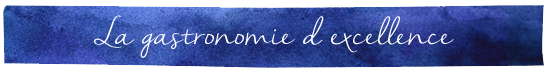
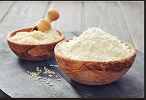
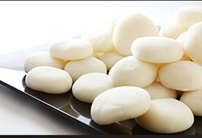
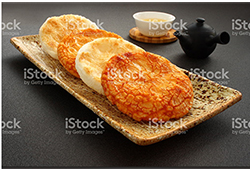
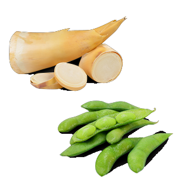

Epicerie et gastronomie
Au Japon, on dit que Niigata est la région de la gastronomie par excellence, notamment grâce à son riz très réputé, ses excellents poissons et ses produits agricoles.
La neige est une composante essentielle de l’environnement gastronomique de Niigata. En effet, à l’arrivée du printemps, la neige hivernale fond le long des montagnes de Niigata, ayant le temps de s’enrichir en nutriments avant de rejoindre les cours d’eau, au profit des sols agricoles de la région. C’est dans cet environnement idéal que le riz et les produits de Niigata sont cultivés. La fierté de la gastronomie locale réside principalement dans son riz, ses poissons et ses fruits et légumes. Découvrez quelques spécialités de la région de Niigata !



